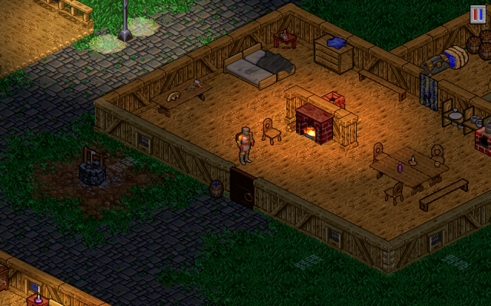
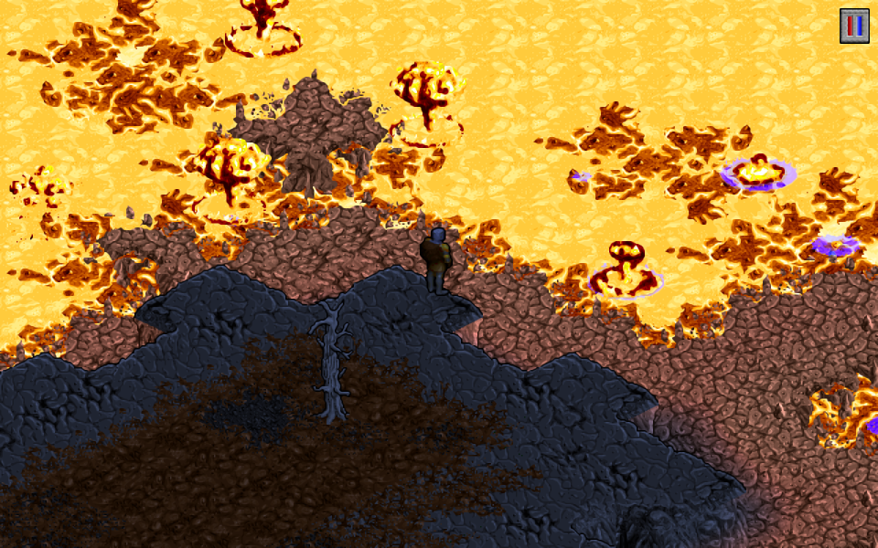

PaganRebuild
PaganRebuild ist eine neu geschriebene Engine für Ultima VIII: Pagan in Rust.
Spieldaten sind nicht enthalten. Du brauchst eine eigene Kopie des Spiels, z. B. die Ultima 8 Gold Edition bei GOG.
PaganRebuild is a newly written engine for Ultima VIII: Pagan in Rust.
No game data is included. You need your own copy of the game, for example the Ultima 8 Gold Edition on GOG.





InstallationInstallation
- Das Release-Zip in den Ultima-8-Ordner entpacken (dorthin, wo
ENGLISH\liegt). - Optional: PaganRebuild kann das Album „Ultima VIII: Pagan - Orchestral Re-Arrangement“ spielen, die Anleitung steht unter Musik.
PaganRebuild\PaganRebuild.exestarten.
- Extract the release zip into the Ultima 8 folder (where
ENGLISH\is). - Optional: PaganRebuild can play the album "Ultima VIII: Pagan - Orchestral Re-Arrangement"; for instructions see Music.
- Run
PaganRebuild\PaganRebuild.exe.
- Ultima 8dein Spielordner
- ENGLISHSpieldaten, ebenso GERMAN und FRENCH
- PaganRebuildaus dem Release-Zip
- PaganRebuild.exestarten
- LICENSE
- soundfonts
- albumoptional: das Album von Bandcamp
- … .ogg
- Ultima 8your game folder
- ENGLISHgame data, likewise GERMAN and FRENCH
- PaganRebuildfrom the release zip
- PaganRebuild.exerun this
- LICENSE
- soundfonts
- albumoptional: the album from Bandcamp
- … .ogg
Windows 64-bit. Linux und macOS sind noch nicht getestet.
Windows 64-bit. Linux and macOS are not tested yet.
Startoptionen
--langSprache, z. B.--lang german(deutsche Fassung) oder--lang french(französische)--gameSpielordner- Alle Optionen:
PaganRebuild --help
Command line
--langlanguage, e.g.--lang german(German version) or--lang french(French)--gamegame folder- All options:
PaganRebuild --help
FunktionenFeatures
Die Verbesserungen lassen sich im Optionsmenü (V oder F10) einzeln ein- und ausschalten.
The improvements can be switched on and off one by one in the options menu (V or F10).
Grafik
- Weiche Bewegung von Figuren und Ansicht
- Breitbild: mehr von der Welt zu den Seiten
- Drehbare Ansicht
- Zoom in Stufen von 75 bis 200 %
- Tag und Nacht: Licht nach der Tageszeit, dunkle blaue Nächte, wärmeres Licht in Häusern
- Lampen, Feuer, Lava und Feuerzauber erhellen ihre Umgebung
- Schatten der Figuren
- Grafikfilter: scharf, xBR oder Röhrenmonitor (CRT)
- Rüstung und Helm sind am Avatar zu sehen, magische Teile leuchten
- Umriss des Avatars, wenn er verdeckt ist
- Gewitterfarben: wie im Original, sanfter oder aus
- Gegner blenden ein, statt plötzlich da zu sein
Ton
- Musik über SoundFont statt des Windows-Synthesizers
- Album-Musik: das orchestrale Re-Arrangement von Bandcamp, wenn es im Ordner
albumliegt - Verbesserter Klang: Effekte und Stimmen neu in 44,1 kHz, ohne Rauschen
- Räumlicher Klang nach Richtung und Entfernung
Anzeige und Hilfen
- Lebensbalken über den Gegnern
- Einstellbare Schriftgröße, Namen unter dem Zeiger
- Minikarte, Karte mit Ortsliste und Wegweiser
- Leicht übersehene Rätselstellen werden benannt
- Besseres Inventar mit festen Plätzen
- Tagebuch der Aufgaben
- Fortschritt von Stärke, Intelligenz und Geschick
Steuerung und Spielablauf
- Moderne Steuerung mit der Maus (siehe Steuerung)
- Automatisches Klettern: beim Laufen per Klick erklettert der Avatar die Kanten auf dem Weg
- Schnellzugriff auf die Tränke über die Zahlentasten
- Gegner bemerken den Avatar früher
- Gegner warten, solange ein Gespräch läuft
- Figuren meiden Flammen, die sie verletzen
- Schlafen bis zu einer gewählten Tageszeit
- Gegenstände rasten auf dem Pentagramm ein, der Avatar erreicht das ganze Pentagramm
Graphics
- Smooth movement of figures and view
- Wide view: more of the world to the sides
- Turnable view
- Zoom in steps from 75 to 200 %
- Day and night: light by the time of day, dark blue nights, warmer light in houses
- Lamps, fires, lava and fire spells light up their surroundings
- Shadows of the figures
- Graphics filter: sharp, xBR or tube monitor (CRT)
- Armour and helmet show on the Avatar, magic pieces glow
- Outline of the Avatar when he is hidden
- Storm colours: as in the original, gentler or off
- Enemies fade in instead of popping up
Sound
- Music played with a SoundFont instead of the Windows synthesizer
- Album music: the orchestral re-arrangement from Bandcamp, when it is in the folder
album - Better sound: effects and voices rebuilt at 44.1 kHz, without hiss
- Spatial sound by direction and distance
Display and aids
- Health bars above enemies
- Adjustable text size, names under the pointer
- Minimap, map with a list of places and a guide
- Easily missed puzzle spots get a name
- Better inventory with fixed slots
- Quest journal
- Progress of strength, intelligence and dexterity
Controls and gameplay
- Modern mouse controls (see Controls)
- Automatic climbing: walking by click, the Avatar climbs the ledges on the way
- Quick access to potions with the number keys
- Enemies notice the Avatar sooner
- Enemies wait while a conversation goes on
- People avoid flames that would hurt them
- Sleep until a chosen time of day
- Items snap into place on a pentacle, and the Avatar reaches all of it
SteuerungControls
So arbeitet die moderne Steuerung (voreingestellt). Mit der klassischen Steuerung verhalten sich die Maustasten wie im Original. Tasten und Gamepad lassen sich im Optionsmenü neu belegen.
This is how the modern controls work (the default). With the classic controls the mouse buttons work as in the original. Keys and gamepad can be reassigned in the options menu.
Unterwegs
Maus
- Boden
- Dorthin laufen; Kanten auf dem Weg erklettert der Avatar von selbst
- halten
- Der Avatar folgt dem Zeiger
- Tür, Hebel, Person
- Hingehen und benutzen bzw. ansprechen
- Gegenstand
- Direkt in den Rucksack
- freier Boden
- Dorthin springen
- zeigen
- Hebt Dinge hervor und nennt ihren Namen (Option „Namen beim Zeigen“)
- ziehen
- Gegenstand verschieben; mit Shift einen Teil eines Stapels; auf den Avatar: in den Rucksack
Tastatur
- Pfeile/WASD
- Gehen, mit Shift rennen (wahlweise entlang der schrägen Wege)
- Leertaste/J
- Zum Zeiger springen, an einer Kante hochklettern
- E
- Das Nächstliegende benutzen
- I/C/K
- Rucksack / Behälter schließen / Schlüsselring
- 1–5
- Trank: gelb, rot, orange, lila, schwarz
Gespräche
- /Zahl
- Antwort wählen
- /Leertaste
- Eine Rede beenden
Kampf
Maus
- Gegner
- Hingehen und zuschlagen (zieht auch die Waffe); gehalten: weiter schlagen
- Strg+
- Auf der Stelle zum Zeiger hin schlagen
- doppelt
- Zum Zeiger hin treten
- Waffe wegstecken
Tastatur
- Tab
- Waffe ziehen / wegstecken
- F
- Den nächsten Gegner schlagen; gehalten: weiter schlagen
- Q
- Treten
- Bhalten
- Blocken
Sonstiges
Exploring
Mouse
- ground
- Walk there; the Avatar climbs the ledges on the way by himself
- hold
- The Avatar follows the pointer
- door, lever, person
- Walk up and use it or talk to them
- item
- Straight into the backpack
- open ground
- Jump there
- point
- Highlights things and shows their name (option "Names on hover")
- drag
- Move an item; with Shift part of a stack; onto the Avatar: into the backpack
Keyboard
- Arrows/WASD
- Walk, run with Shift (optionally along the slanted roads)
- Space/J
- Jump towards the pointer, climb up at a ledge
- E
- Use the nearest thing
- I/C/K
- Backpack / close containers / key ring
- 1–5
- Potion: yellow, red, orange, purple, black
Conversations
- /Number
- Pick an answer
- /Space
- End a speech
Fight
Mouse
- enemy
- Walk up and strike (draws the weapon too); held: keep striking
- Ctrl+
- Strike on the spot towards the pointer
- double
- Kick towards the pointer
- Put the weapon away
Keyboard
- Tab
- Draw / put away the weapon
- F
- Strike the nearest enemy; held: keep striking
- Q
- Kick
- Bhold
- Block
Other
MusikMusic
PaganRebuild kann statt der MIDI-Musik das Album „Ultima VIII: Pagan - Orchestral Re-Arrangement“ spielen. Das Album ist nicht enthalten:
- Das Album bei Bandcamp im Format „Ogg Vorbis“ herunterladen.
- Das Zip in einen Ordner
albumim Ultima-8-Ordner entpacken (nebenENGLISH\). - Im Optionsmenü unter Ton bei „Musik“ die Einstellung „Album“ wählen.
PaganRebuild can play the album "Ultima VIII: Pagan - Orchestral Re-Arrangement" instead of the MIDI music. The album is not included:
- Download the album from Bandcamp as "Ogg Vorbis".
- Extract the zip into a folder
albuminside the Ultima 8 folder (next toENGLISH\). - In the options menu under Sound, set "Music" to "Album".
Original music: Nenad Vugrinec
Arrangement and orchestration: Dustin Naegel
https://dustinnaegel.bandcamp.com/album/ultima-viii-pagan-orchestral-re-arrangement
Credits
Based on the work of ScummVM (formerly Pentagram), https://www.scummvm.org/.
SoundFont: GeneralUser GS by S. Christian Collins, https://www.schristiancollins.com/generaluser.php.
Ultima VIII: Pagan (c) 1994 Origin Systems / Electronic Arts. Fan project, not affiliated with Electronic Arts or Origin Systems.
Lizenz: GPL-3.0-or-later
License: GPL-3.0-or-later